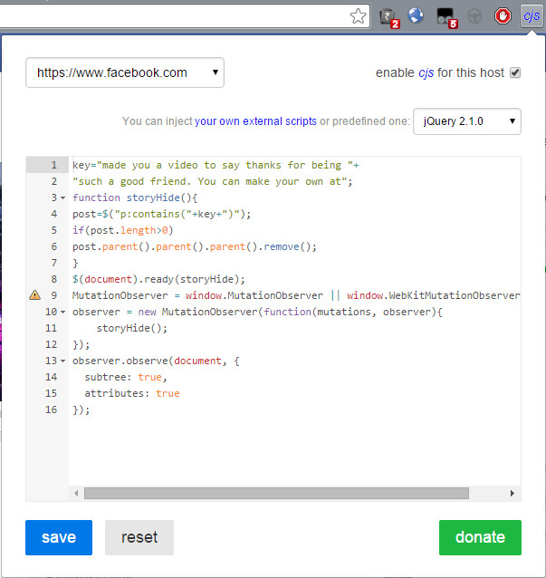

Many of you might have noticed that Facebook has come up with the so called "say thanks" videos.

I, along with many others definitely, find this annoying and repetitive. So here's how to make those posts from vanish from Facebook.
- Install the Custom JavaScript for Websites Chrome Extension.
- Open your Facebook newsfeed.
-
Open the cjs Chrome extension and paste the following code
key="made you a video to say thanks for being such a good friend. You can make your own at"; function storyHide(){ post=$("p:contains("+key+")"); if(post.length>0) post.parent().parent().parent().remove(); } $(document).ready(storyHide); MutationObserver = window.MutationObserver || window.WebKitMutationObserver; observer = new MutationObserver(function(mutations, observer){ storyHide(); }); observer.observe(document, { subtree: true, attributes: true });
- Set the "You can inject your own external scripts or predefined one:" option to "jQuery 2.1.0"
- Check "enable cjs for this host"
-
Click Save.
Reload.
Done!!

Your Facebook is now devoid of Say Thanks videos. Cheers!!